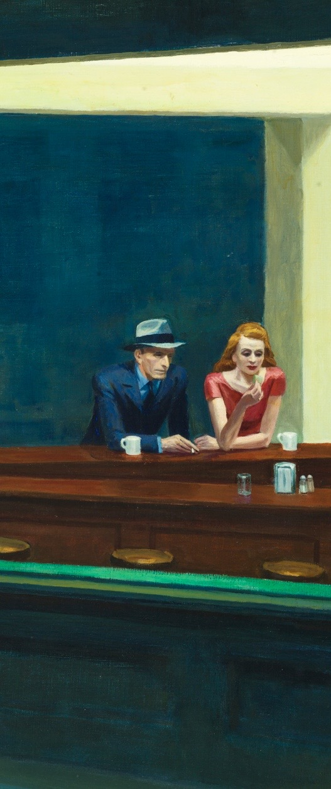
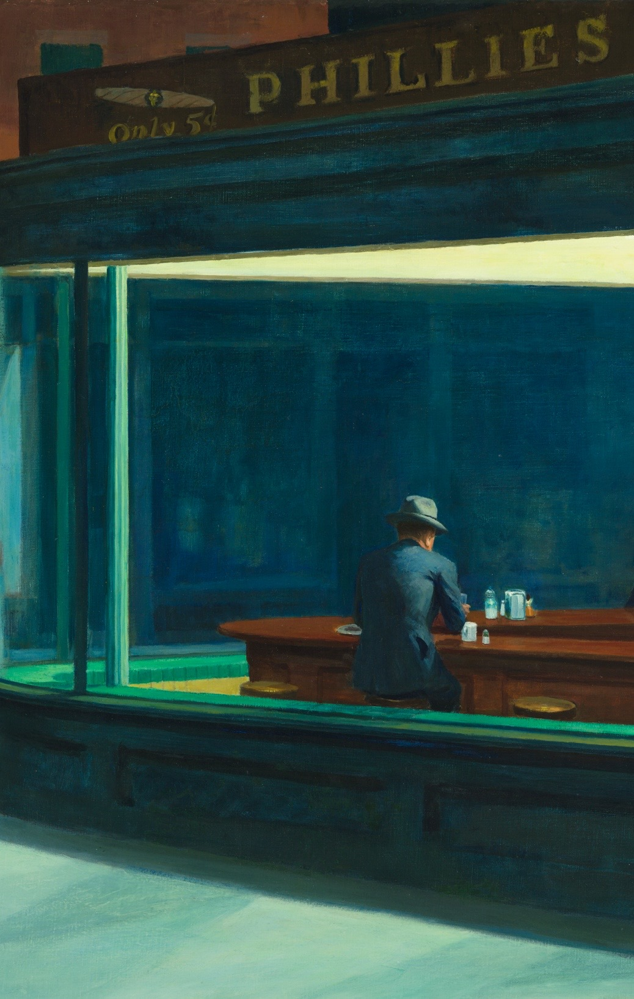
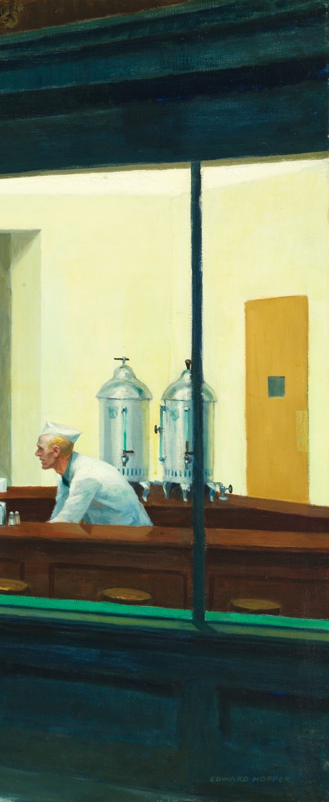

"Forse, senza saperlo, stavo dipingendo la solitudine di una grande città." — Edward Hopper
1. L'Acquario di Luce

Osserva la struttura: non ci sono porte visibili. Lo spettatore guarda dall'esterno, come se stesse osservando dei pesci in un acquario. La luce fluorescente taglia il buio della strada con una freddezza chirurgica.
2. Silenzi Incrociati

La donna dai capelli rossi e l'uomo accanto a lei quasi si toccano, ma le loro mani non si incontrano mai. Hopper dipinge la distanza psicologica: puoi essere seduto accanto a qualcuno e sentirti comunque solo.
3. L'Uomo Ombra

L'uomo di schiena è il perno del mistero. Chi è? Perché è solo a quest'ora? Voltandoci le spalle, ci costringe a proiettare su di lui la nostra stessa solitudine.
4. Il Barista Prigioniero

Il barista è intrappolato dietro quel bancone triangolare che sembra un'isola senza via di fuga. Alza lo sguardo, forse sognando una vita fuori da quel cerchio di luce artificiale.